Back to Projects
Project 3 — Source Assessment Presentation
Continuance Intention and Addiction
Analyzing the Role of Escapism in Balanced Gaming Engagement — A primary text source assessment of Li, Hui & Reiners (2025).
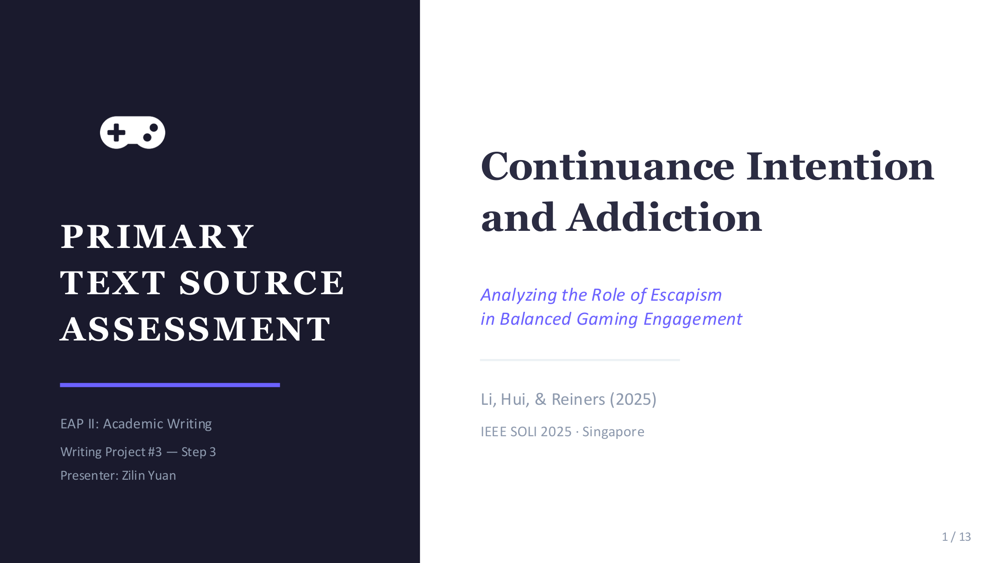
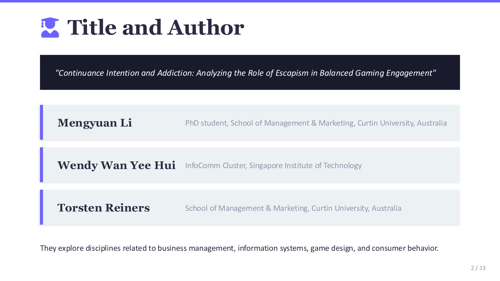
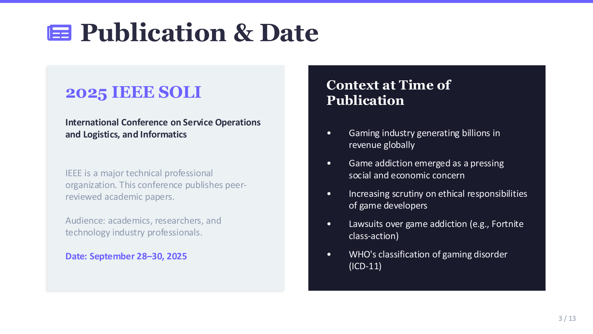
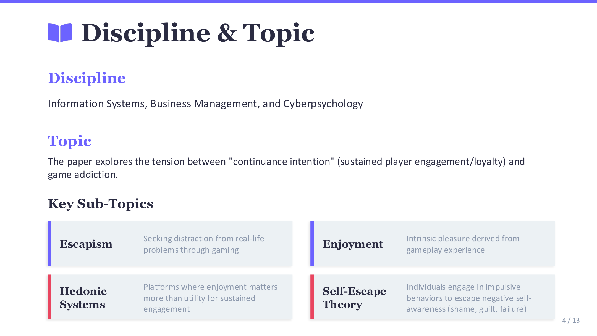
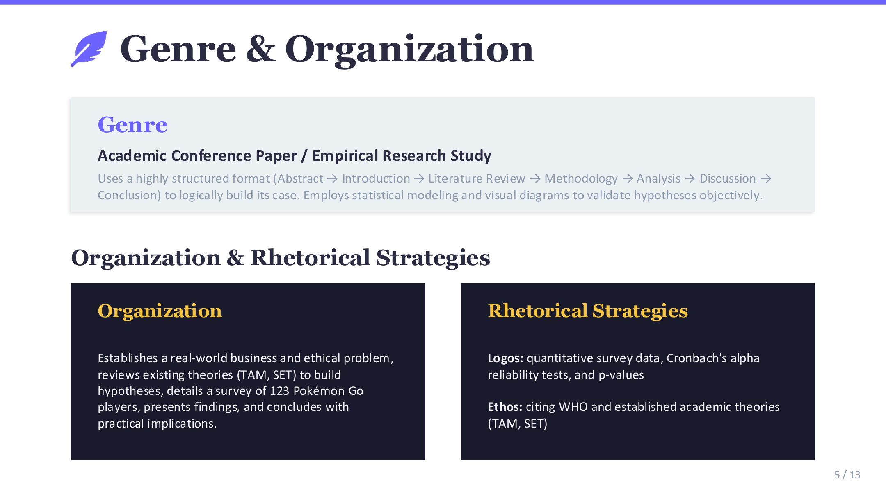
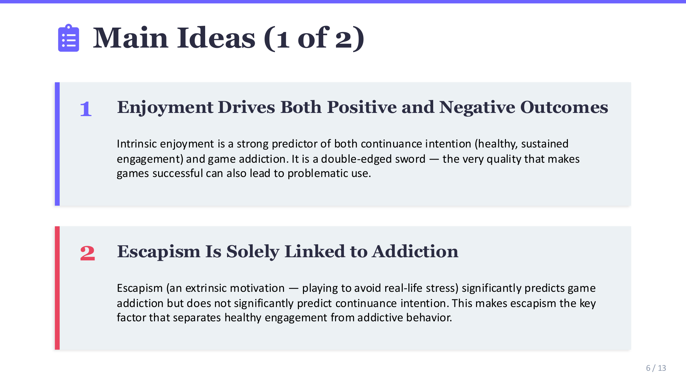
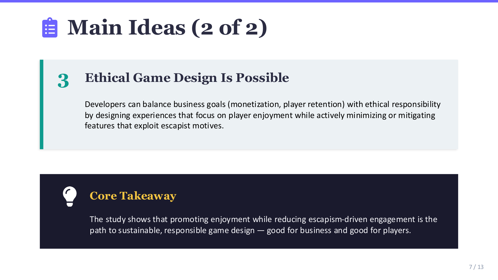
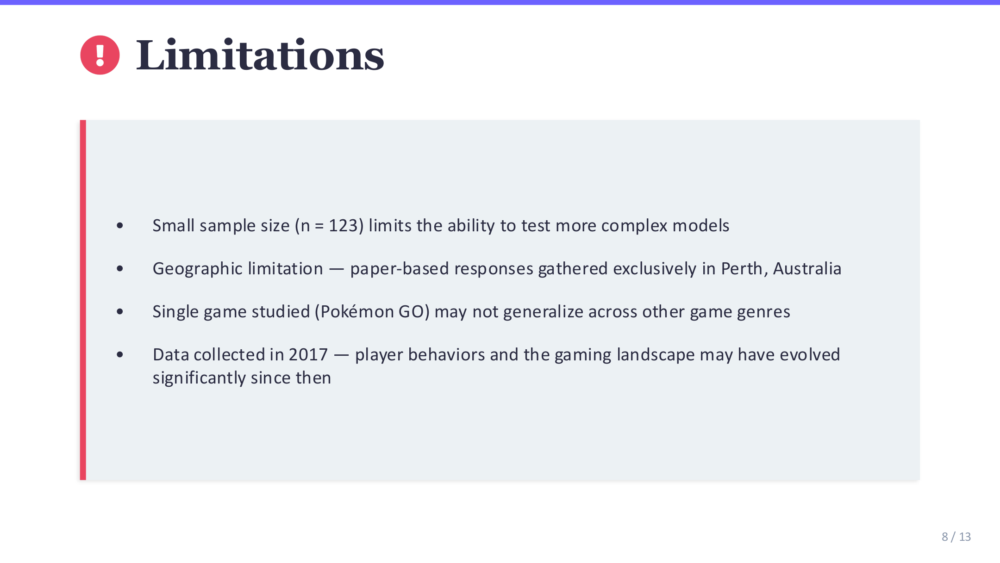
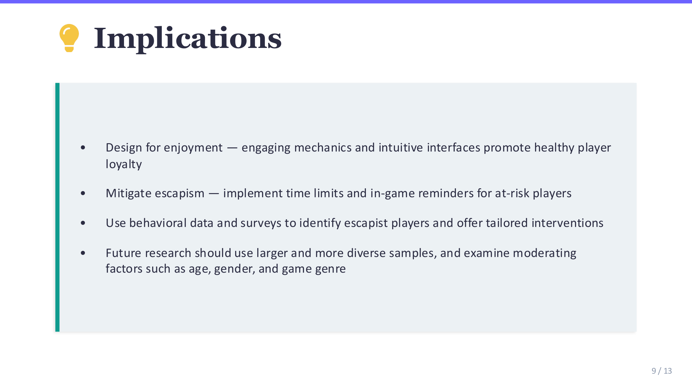
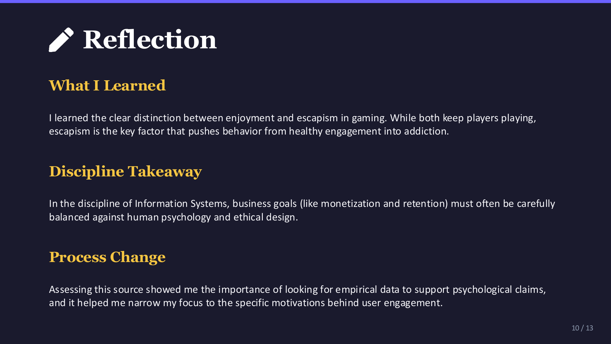
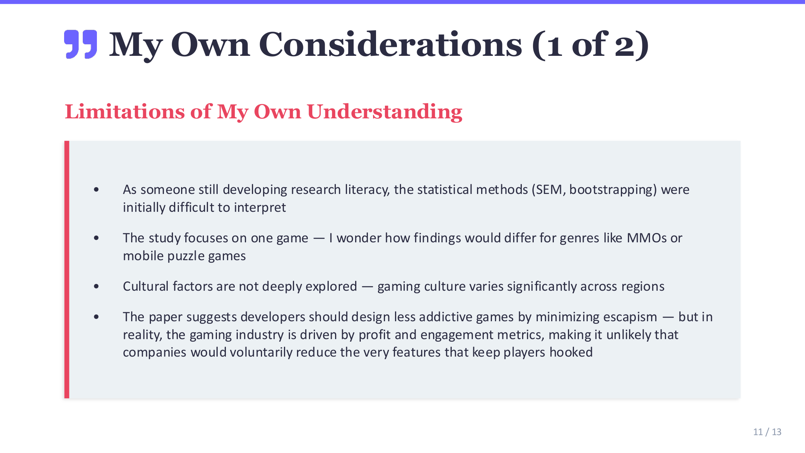
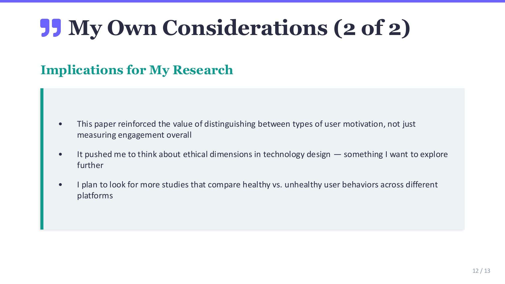
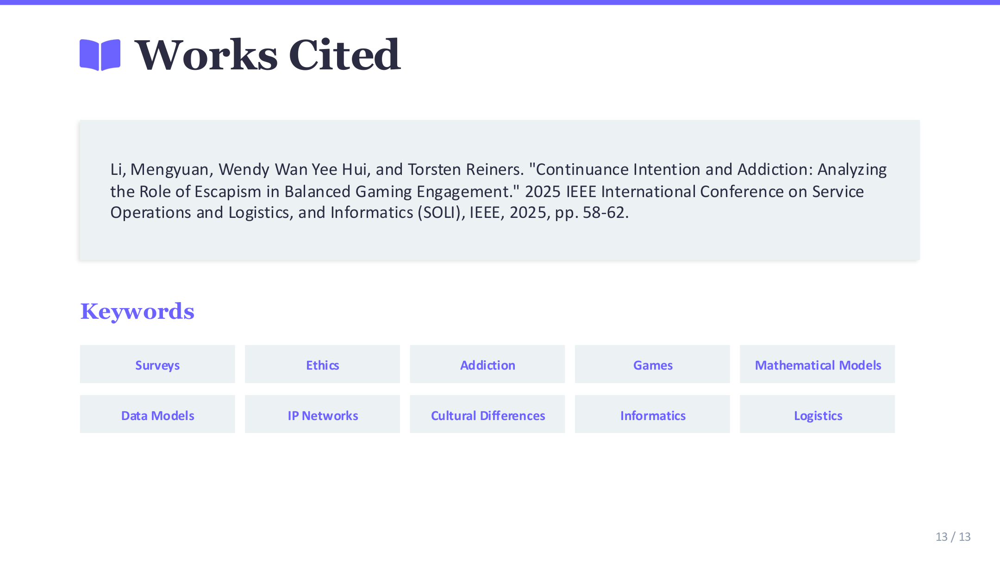
Use ← → arrow keys to navigate
Download Original (.pptx)